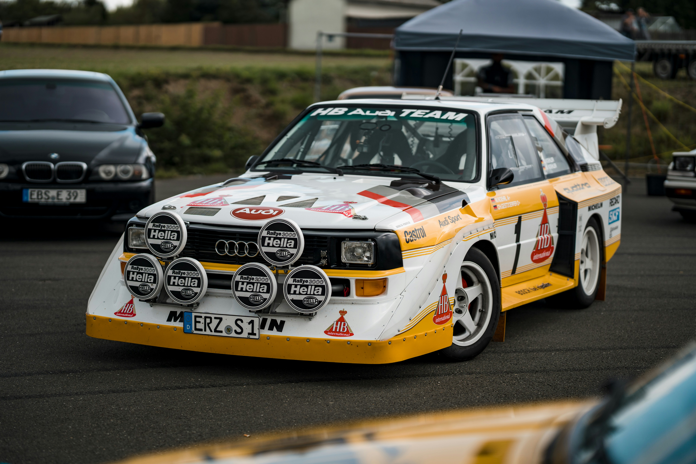

Otomobil, insanlık tarihinin sadece ulaşım alışkanlıklarını değil; şehir planlamasını, ekonomiyi, sosyal hayatı ve hatta savaşların seyrini değiştiren en önemli icatlardan biridir. 1886 yılında Karl Benz'in, eşi Bertha Benz'in dikiş makinesinden esinlenerek yaptığı üç tekerlekli araçtan, bugün kendi kendine giden yapay zekalı bilgisayarlara uzanan bu yolculuk, mühendislik zaferleri ve trajedilerle doludur.
Bu sayfada, otomobil tarihini basit tarihlerle değil; dönemlerin ruhunu, efsaneleşen kasaları ve mühendislik kırılma noktalarını derinlemesine inceleyeceğiz. Kemerlerinizi bağlayın, 19. yüzyıla gidiyoruz.
İkinci Dünya Savaşı sonrası Amerika ekonomisi patlama yaşıyordu. Benzin sudan ucuzdu, yollar geniş ve dümdüzdü. Genç nesil, babalarının ağır ve hantal sedanlarını istemiyordu. Detroitli üreticiler (Ford, GM, Chrysler) bu çağrıya cevap verdi: "Büyük Motor, Küçük Kasa."

Tarihin en başarılı lansmanı. İlk gün 22.000 sipariş aldı. Agresif görünümü ve kükreyen V8 motoruyla "Pony Car" sınıfını yarattı. Viraj kabiliyeti zayıftı ama düzlükte bir roket gibiydi.
Sinema tarihinin en ikonik kötü adam arabası. 7.0 Litre Hemi V8 motoruyla tam bir canavardı. Aerodinamisi bir tuğla gibiydi ama torku asfaltı kazıyordu. Bu altın çağ, 1973 Petrol Krizi ile sona erdi.
Otomobil sporları tarihinin en vahşi, en hızlı ve en korkutucu dönemi... FIA, üreticileri ralliye çekmek için kuralları neredeyse tamamen kaldırdı. Sonuç: 1 tonun altında ağırlığa, 600 beygir güce sahip, 0-100'ü çakılda 2.5 saniye süren canavarlar.
Audi Quattro, o güne kadar sadece traktörlerde işe yarayacağı sanılan dört çeker sistemini (4WD) ralliye soktuğunda herkes güldü, ta ki Audi virajları rakiplerinden iki kat hızlı dönene kadar. Ralli tarihini sonsuza dek değiştirdi.
Ancak araçlar o kadar hızlıydı ki, pilotların beyinleri görüntüyü işlemekte zorlanıyordu. 1986 yılında Henri Toivonen'in Lancia ile uçuruma yuvarlanıp yanarak hayatını kaybetmesi sonucu, B Grubu "çok tehlikeli" olduğu gerekçesiyle yasaklandı.
90'lı yıllar, Japonya'da artan trafik kazaları nedeniyle üreticilerin (Toyota, Nissan, Honda, Mazda) kendi aralarında gizli bir "Gentlemen's Agreement" (Centilmenlik Anlaşması) imzaladığı dönemdir. Buna göre hiçbir araç fabrikasyon olarak 280 beygiri geçmeyecekti.
Modifiye dünyasının tartışmasız kralı. Kaputunun altındaki 2JZ-GTE motoru, dökme demir bloğu sayesinde motorun içini açmadan 800 beygire kadar dayanabiliyordu. Sıralı 6 silindirli ve çift turbolu bu motor, pürüzsüz çalışması ve sonsuz güç potansiyeliyle efsaneleşti.

Lakabı "Godzilla". Döneminin çok ötesinde bir teknolojiye sahipti. ATTESA E-TS dört çeker sistemi, gücü tekerleklere o kadar akıllıca dağıtıyordu ki, pistlerde Ferrari ve Porsche'leri geçebiliyordu. RB26 motoru ve ikonik yuvarlak stop lambalarıyla bir kültür ikonudur.
2000'li yıllarda Volkswagen Grubu, mühendislerine imkansız bir görev verdi: "1000 beygir gücünde, 400 km/s hızı geçebilen ama aynı zamanda kliması açıkken operaya gidilebilecek bir araba yapın."

Sonuç: Bugatti Veyron. 8.0 Litre hacminde, W16 silindirli ve 4 turbolu bir motor. Tam gazda deposunu 12 dakikada bitiriyordu. Lastikleri o kadar özeldi ki, Michelin sadece bu araç için uçak lastiği teknolojisiyle üretim yaptı.
Tüm bu efsanelerin arasında benim için her zaman yeri ayrı olan bir otomobil var: Audi RS6 Avant. Otomotiv dünyasında "Station Wagon (Aile Arabası)" dendiğinde akla gelen hantal, sıkıcı ve yavaş imajı, elindeki balyozla parçalayan bir başyapıt. O, süper spor otomobillerin korkulu rüyası, asfaltın üzerindeki en öfkeli aile babası.

Bu aracın kalbinde, mühendislik harikası 4.0 litrelik Çift Turbolu (Bi-Turbo) V8 motor yatar. Fabrikasyon olarak 600 Beygir güç ve 800 Nm Tork üretir. Ancak bu sadece kağıt üzerindeki veridir. Gaz pedalına dokunduğunuzda, iki adet "Twin-Scroll" turboşarj anında devreye girer ve 2.2 tonluk bu devasa kütleyi, fizik kurallarına meydan okuyarak 0'dan 100 km/s hıza sadece 3.6 saniyede fırlatır.
RS6'yı özel yapan sadece motoru değil, gücü yere aktarma şeklidir. Efsanevi Quattro sistemi, mekanik bir kilitli diferansiyel ile gücü ön ve arka aks arasında milisaniyeler içinde dağıtır. Normal sürüşte güç %40 ön, %60 arka şeklindedir; ancak kayma anında gücün %85'ini arka tekerleklere göndererek aracı bir "Drift Makinesi"ne dönüştürebilir.
Dinamik Tüm Tekerlekten Yönlendirme (All-Wheel Steering) sistemi sayesinde, düşük hızlarda arka tekerlekler önlerin tersine dönerek bir hatchback kıvraklığı sağlarken; yüksek hızlarda önlerle aynı yöne dönerek aracı rayda giden bir tren gibi asfalta yapıştırır.
Çünkü o bir "Tek Kişilik Dev Kadro". Arkasında ailenizin tatil valizlerini, çocuk koltuğunu ve market poşetlerini taşıyabilecek 1680 litrelik devasa bir bagaj hacmine sahipken; aynı anda otobanda Ferrari ve Lamborghini'leri dikiz aynasında küçültebilecek kadar vahşidir. Şişkin çamurlukları, agresif difüzörü ve o meşhur oval egzozlarından çıkan V8 senfonisiyle RS6, sadece bir araba değil, mekanik bir sanat eseridir.
Bugün ise otomotiv dünyası tarihinin en büyük ikinci kırılma noktasını yaşıyor. İçten yanmalı motorların 130 yıllık hakimiyeti, yerini elektrikli motorlara (EV) bırakıyor. Tesla ile başlayan bu akım, performansı yeniden tanımlıyor. Ancak biz Garage 407 olarak, benzin kokusunun, vites geçişlerinin ve mekanik senfoninin yerini hiçbir yazılımın tutamayacağına inanıyoruz.